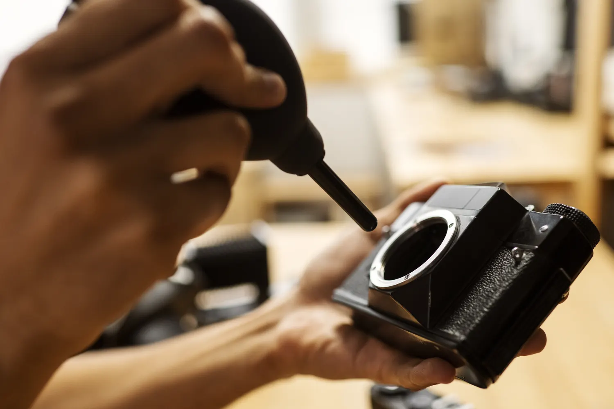
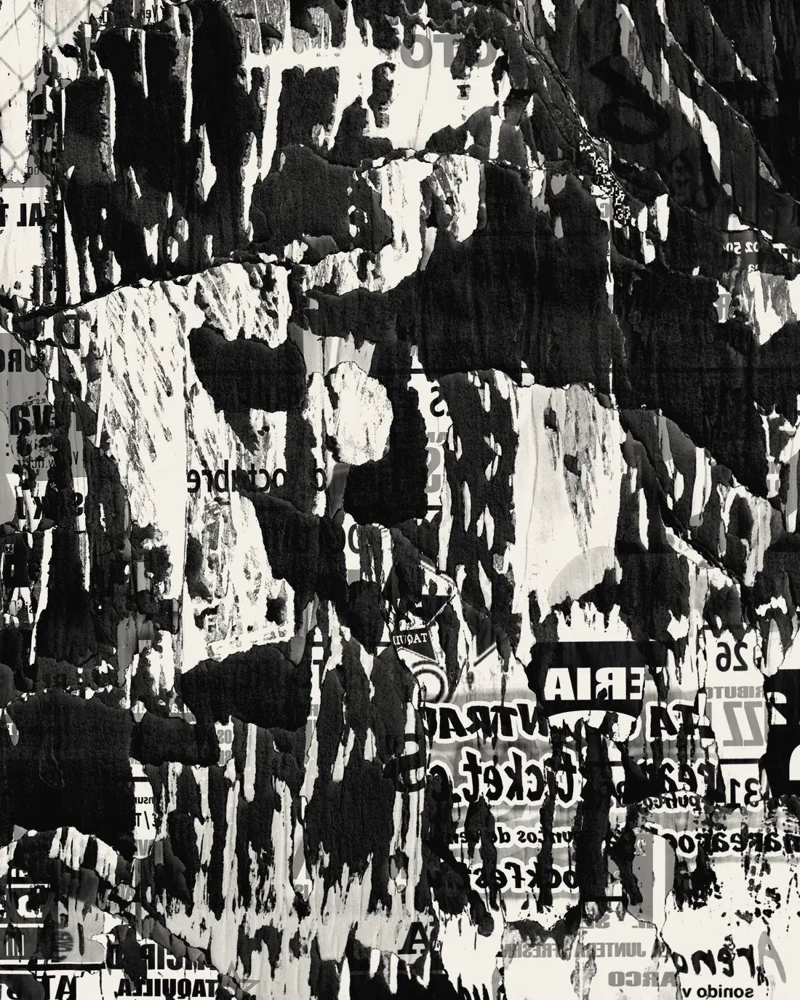
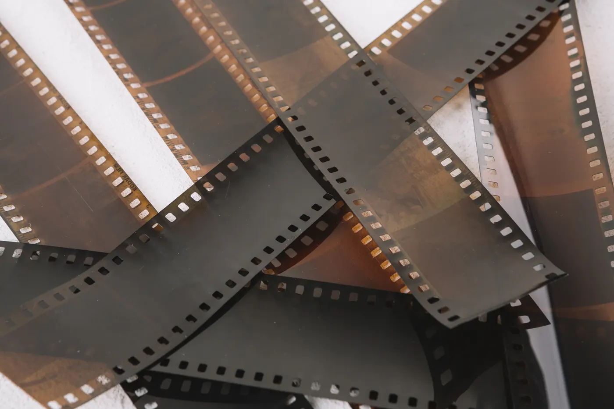
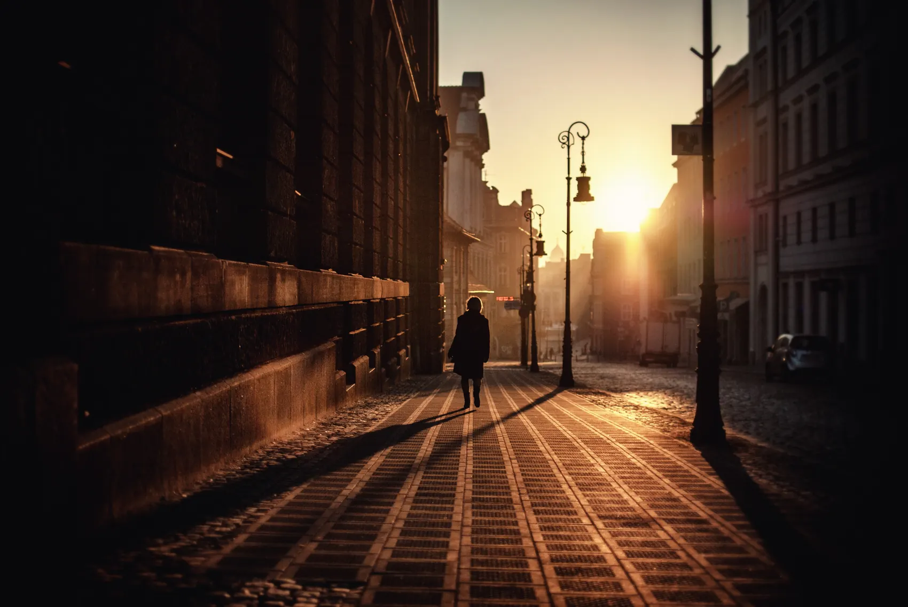
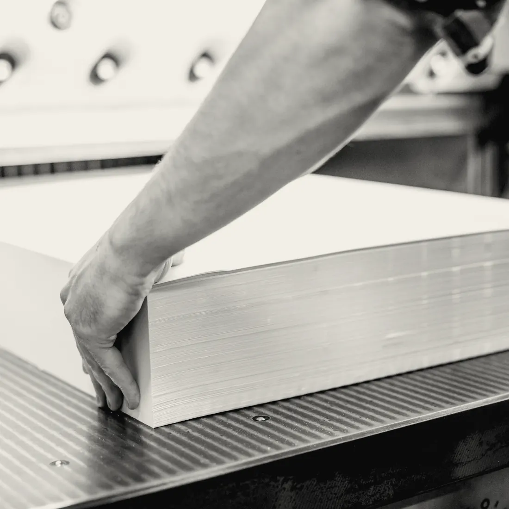
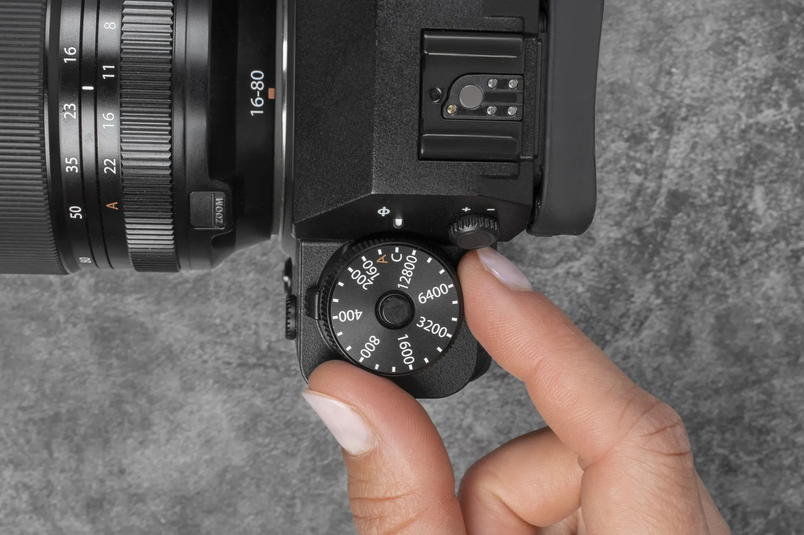
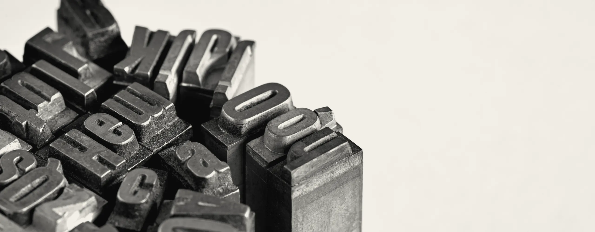

דפוס וצילום
שמונה עבודות מהארכיון
עבודות יד, נייר אמיתי, ובלי פילטרים.
1 מתוך 8








ערימת כרטיסים עומדת על ציר בתחתית, כמו רולודקס על שולחן. כל מנת גלילה מפילה את הכרטיס הקדמי קדימה ומטה, והבא אחריו מתרומם למקומו. גלילה אחורה מרימה אותם בחזרה, ומונה בצד מראה איפה אנחנו.
מתי משתמשים: ארכיון, לקוחות, פרויקטים או שלבים, שישה עד עשרה פריטים שכל אחד מהם צריך רגע משלו. מתי לא: מעל עשרה פריטים (הגלילה נהיית ארוכה), או דף שצריך להגיע בו למידע מהר.
הדמו כאן עיצובי-ניטרלי בכוונה. כשהמהלך נכנס לפרויקט, מיובאת רק ההתנהגות: הצבעים, הרדיוסים, הפונטים והצללים יורשים את העיצוב של אותו פרויקט.
דפוס וצילום
עבודות יד, נייר אמיתי, ובלי פילטרים.
1 מתוך 8







הקוד כאן עומד בפני עצמו. כל טוקן עיצוב נושא ברירת מחדל, מחלקות העזר של המאגר מוטמעות בו, ותגי הסקריפט מסודרים לפי הסדר הנכון. פרויקט שמגדיר --accent או --line משלו יורש אותם אוטומטית.
/* מחלקות עזר של המאגר שהרכיב הזה משתמש בהן */
.stage{padding:var(--sec, clamp(120px, 12vw, 260px)) var(--gutter, clamp(24px, 5vw, 96px));position:relative}
.stage.tight{padding-block:clamp(48px,5vw,90px)}
.stage.full{padding-inline:0}
/* B144 · רולודקס שהגלילה מפילה בו כרטיס אחרי כרטיס */
.rl{position:relative}
.rl-s{display:grid;gap:clamp(24px,3vw,48px);padding:clamp(24px,4vw,64px) clamp(20px,5vw,72px)}
.rl-t{display:grid;gap:16px;justify-items:start}
.rl-k{margin:0;font-size:15px;font-weight:700;letter-spacing:.04em;color:var(--accent, #4a3aff)}
.rl-t h2{margin:0;font-size:clamp(34px,4.4vw,64px);font-weight:800;line-height:1.05;letter-spacing:-.015em;text-wrap:balance}
.rl-t p:not(.rl-k){margin:0;max-width:44ch;font-size:var(--fs-body, clamp(17px, 0.6vw + 0.7rem, 22px));line-height:1.6;color:var(--muted, #6a6d85)}
.rl-cta{display:inline-flex;align-items:center;min-height:48px;padding:12px 24px;border-radius:999px;background:var(--ink, #16182b);color:var(--bg, #f7f7fa);font-weight:700;text-decoration:none}
.rl-cta:focus-visible{outline:2px solid var(--accent, #4a3aff);outline-offset:3px}
.rl-g{display:grid;grid-template-columns:repeat(auto-fill,minmax(min(100%,160px),1fr));gap:16px}
.rl-i{margin:0}
.rl-i img{display:block;width:100%;height:auto;aspect-ratio:4/3;object-fit:cover;border-radius:12px}
.rl.is-on .rl-s{overflow-x:clip}
.rl.is-on .rl-v{position:relative;perspective:1100px}
.rl.is-on .rl-g{display:block;position:absolute;inset:0;transform-style:preserve-3d}
.rl.is-on .rl-i{position:absolute;inset:0;margin:auto;height:fit-content;width:clamp(260px,38vw,600px)}
.rl-i figcaption{display:flex;justify-content:space-between;gap:16px;padding-block:12px 4px;font-size:15px}
.rl-i figcaption span{color:var(--muted, #6a6d85)}
.rl-n{margin:0;font-size:15px;font-weight:700;font-variant-numeric:tabular-nums}
.rl.is-on{height:380vh}
.rl.is-on .rl-s{position:sticky;top:0;height:100vh;grid-template-columns:minmax(0,1fr) minmax(0,1.5fr);align-items:center;padding-block:0;overflow:clip}
.rl.is-on .rl-v{height:100%;perspective-origin:50% 26%}
.rl.is-on .rl-i{padding:12px;border-radius:16px;background:var(--surface,var(--bg, #f7f7fa));box-shadow:0 12px 32px color-mix(in srgb,var(--ink, #16182b) 16%,transparent);transform-origin:50% 100%}
@media(max-width:800px){.rl.is-on .rl-s{grid-template-columns:minmax(0,1fr);grid-template-rows:auto minmax(0,1fr);padding-block:24px 0}.rl.is-on .rl-t p:not(.rl-k):not(.rl-n){display:none}}<div class="stage"><section class="rl" data-rl><div class="rl-s">
<div class="rl-t">
<p class="rl-k">דפוס וצילום</p>
<h2>שמונה עבודות מהארכיון</h2>
<p>עבודות יד, נייר אמיתי, ובלי פילטרים.</p>
<p class="rl-n" aria-live="polite"><span data-n>1</span> מתוך <span data-of>8</span></p>
</div>
<div class="rl-v" data-view><div class="rl-g" data-scene><figure class="rl-i" data-i><img src="https://liavwebdesign-spec.github.io/motion-vault/assets/media/real/s01/bench-hands.webp" width="1500" height="1000" alt="ידיים מנקות מצלמה במברשת" loading="lazy" decoding="async" draggable="false"><figcaption><b>ניקוי מצלמה</b><span>סדנה, 2024</span></figcaption></figure><figure class="rl-i" data-i><img src="https://liavwebdesign-spec.github.io/motion-vault/assets/media/real/s07/hero-posters.webp" width="1100" height="1375" alt="כרזות דפוס בשחור לבן" loading="lazy" decoding="async" draggable="false"><figcaption><b>כרזות בשחור לבן</b><span>דפוס משי, 2023</span></figcaption></figure><figure class="rl-i" data-i><img src="https://liavwebdesign-spec.github.io/motion-vault/assets/media/real/s01/negatives.webp" width="1400" height="933" alt="רצועות נגטיב של פילם" loading="lazy" decoding="async" draggable="false"><figcaption><b>סריקת נגטיבים</b><span>ארכיון, 2023</span></figcaption></figure><figure class="rl-i" data-i><img src="https://liavwebdesign-spec.github.io/motion-vault/assets/media/real/s07/ink-hands.webp" width="1000" height="1000" alt="ידיים פורשות דיו כתום" loading="lazy" decoding="async" draggable="false"><figcaption><b>דיו כתום</b><span>דפוס משי, 2022</span></figcaption></figure><figure class="rl-i" data-i><img src="https://liavwebdesign-spec.github.io/motion-vault/assets/media/real/s01/street-light.webp" width="1700" height="1138" alt="רחוב אבן בשקיעה" loading="lazy" decoding="async" draggable="false"><figcaption><b>רחוב האבן</b><span>צילום, 2022</span></figcaption></figure><figure class="rl-i" data-i><img src="https://liavwebdesign-spec.github.io/motion-vault/assets/media/real/s07/paper-stack.webp" width="1100" height="1100" alt="יד על ערימת נייר" loading="lazy" decoding="async" draggable="false"><figcaption><b>גיליון אחרון</b><span>בית דפוס, 2021</span></figcaption></figure><figure class="rl-i" data-i><img src="https://liavwebdesign-spec.github.io/motion-vault/assets/media/real/s01/hero-dial.webp" width="1900" height="1267" alt="אצבעות מסובבות חוגה של מצלמה" loading="lazy" decoding="async" draggable="false"><figcaption><b>חוגה ידנית</b><span>צילום, 2021</span></figcaption></figure><figure class="rl-i" data-i><img src="https://liavwebdesign-spec.github.io/motion-vault/assets/media/real/s07/band-type.webp" width="2560" height="1000" alt="אותיות עופרת" loading="lazy" decoding="async" draggable="false"><figcaption><b>אותיות עופרת</b><span>סדר ידני, 2020</span></figcaption></figure></div></div>
</div></section></div>(function(){
function mod(v,n){return((v%n)+n)%n;}
function ss(a,b,x){const t=Math.max(0,Math.min(1,(x-a)/(b-a)));return t*t*(3-2*t);}
function mv3(root,o){
if(matchMedia("(prefers-reduced-motion:reduce)").matches)return;
const view=root.querySelector("[data-view]"),scene=root.querySelector("[data-scene]"),all=[...root.querySelectorAll("[data-i]")];
const phone=innerWidth<800,items=phone&&o.phoneN?all.slice(0,o.phoneN):all;
all.slice(items.length).forEach(e=>e.remove());
root.classList.add("is-on");
const a={N:items.length,items,root,view,scene,phone,p:o.p0||0,q:o.q0||0,t:0,mx:0,my:0,w:1,h:1};
let tp=a.p,tq=a.q,vp=0,vq=0,dn=false,lx=0,ly=0,last=0,idle=0,raf=0,seen=false,mxT=0,myT=0,first=true;
const ease=o.ease||.09;
function sp(){const r=root.getBoundingClientRect(),d=r.height-innerHeight;return d>0?Math.min(1,Math.max(0,-r.top/d)):0;}
function size(){a.w=view.clientWidth||1;a.h=view.clientHeight||1;if(o.size)o.size(a);kick();}
function frame(now){raf=0;if(!seen)return;
const dt=Math.min(.05,last?(now-last)/1000:.016);last=now;a.t+=dt;
if(o.range){const g=o.range(a);tp=g[0]+(g[1]-g[0])*sp();if(first){a.p=tp;first=false;}}
if(o.drag&&!dn){tp+=vp;tq+=vq;vp*=.94;vq*=.94;if(idle>0)idle-=dt;else if(o.auto)tp+=o.auto*dt;}
if(o.qMax)tq=Math.max(-o.qMax,Math.min(o.qMax,tq));
a.p+=(tp-a.p)*ease;a.q+=(tq-a.q)*ease;a.mx+=(mxT-a.mx)*.06;a.my+=(myT-a.my)*.06;
if(o.frame)o.frame(a);
for(let i=0;i<a.N;i++)o.place(items[i],i,a);
if(o.auto||o.always||dn||Math.abs(tp-a.p)>.0004||Math.abs(vp)>.00005||Math.abs(mxT-a.mx)>.002||Math.abs(myT-a.my)>.002)raf=requestAnimationFrame(frame);}
function kick(){if(!raf&&seen){last=0;raf=requestAnimationFrame(frame);}}
new IntersectionObserver(([e])=>{seen=e.isIntersecting;if(seen)kick();},{rootMargin:"120px"}).observe(root);
new ResizeObserver(size).observe(view);
addEventListener("scroll",kick,{passive:true});
root.addEventListener("pointermove",e=>{const r=view.getBoundingClientRect();mxT=((e.clientX-r.left)/r.width-.5)*2;myT=((e.clientY-r.top)/r.height-.5)*2;kick();});
if(o.drag){
view.addEventListener("pointerdown",e=>{dn=true;lx=e.clientX;ly=e.clientY;vp=vq=0;view.style.cursor="grabbing";try{view.setPointerCapture(e.pointerId);}catch(_){}kick();});
view.addEventListener("pointermove",e=>{if(!dn)return;const dx=e.clientX-lx,dy=e.clientY-ly;lx=e.clientX;ly=e.clientY;vp=dx*o.drag;tp+=vp;if(o.dragQ){vq=dy*o.dragQ;tq+=vq;}});
const up=()=>{dn=false;idle=1.4;view.style.cursor="";kick();};
view.addEventListener("pointerup",up);view.addEventListener("pointercancel",up);
}
size();
}
let shown=-1,nEl=document.querySelector("[data-n]"),ofEl=document.querySelector("[data-of]");
mv3(document.querySelector("[data-rl]"),{phoneN:6,ease:.1,
range:function(a){return [0,a.N-1.02];},
size:function(a){ofEl.textContent=a.N;a.y=a.h*.06;},
frame:function(a){const n=Math.round(a.p);if(n!==shown){shown=n;nEl.textContent=n+1;}},
place:function(e,i,a){const d=i-a.p;let g,z,o;
if(d<0){g=Math.max(-92,d*92);z=0;o=1-ss(.72,1,-d);}else{g=d*11;z=-d*30;o=1-ss(4,5.4,d);}
e.style.transform="translate3d(0,"+a.y.toFixed(1)+"px,"+z.toFixed(1)+"px) rotateX("+g.toFixed(2)+"deg)";
e.style.opacity=o.toFixed(3);e.style.visibility=o<.01?"hidden":"visible";}});
})();